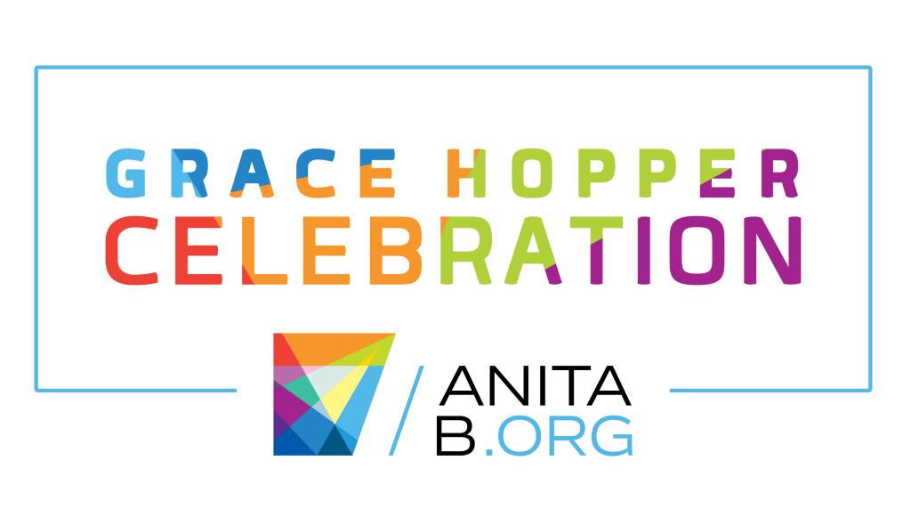
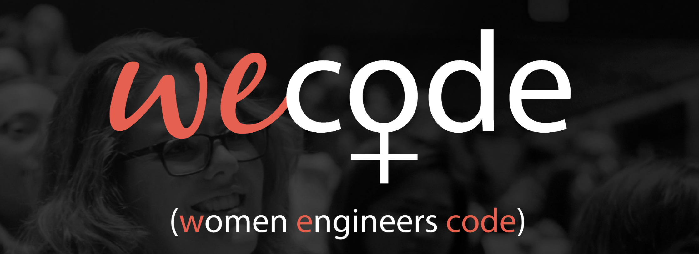
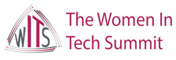
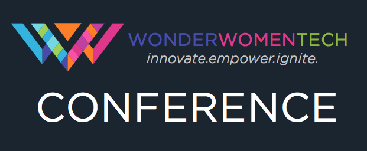
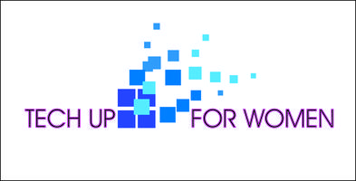
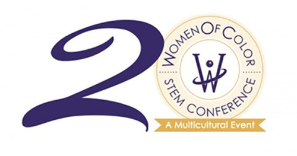

2019 WOMEN IN TECH CONFERENCES
Women can connect with others in the industry, discuss the industry and its challenges, but also hear amazing female speakers and get actionable advice on topics like entrepreneurship and advancing their careers. Sound like something you're interested in? Check out these tech events that provide everything from product-building power hours to skills advancing and networking opportunities
2019 Women in Technology Events
| January | February | March |
|---|---|---|
| April | May | June |
| July | August | September |
| October | November | December |
Grace Hopper
The Grace Hopper Celebration has worked for 15 years to bring together the community of women technologists and raise awareness of the contributions of women in computing. The conference offers professional development for attendees by providing mentoring and collaborative proposals. Featured speakers talk about topics like Artificial Intelligence, Data Science, GFX, HCI, Security/Privacy and Software Engineering
WECode
WECode (Women Engineers Code) is the largest student-run conference for women in computer science in the country. We're dedicated to expanding the skills, network, and community of technical women worldwide, bringing together a diverse group of engineers over the course of two days to share ideas and conversations on technology and innovation. All genders are encouraged to attend! Enjoy empowering keynotes, intimate workshops, and the opportunity to mingle with industry leaders from top tech companies. Expand your network and explore new areas of interest
The Women in Tech Summit
This conference is a combination of hands-on tech workshops, discussions about careers in tech and networking opportunities with other women in the technology field. The main goal is to inspire, educate and connect women in the women in tech industry.
Wonder Women Tech
Wonder Women Tech (WWT) is a nonprofit organization and ecosystem that produces year-round programming and national and international conferences that highlight, educate, and celebrate women and the underrepresented in STEAM industries (Science, Technology, Engineering, Arts, Math), innovation and entrepreneurialism. Their conferences and programming offer a variety of speakers, panel discussions, coding classes, workshops, hackathons, diversity career fair, STEAM camps, community inclusion activities, thought leadership, and other dynamic programming
Tech Up For Women
Tech Up for Women is an event & engagement platform for the advancement of women in technology through education, resourcing, collaboration and networking. The purpose of the event is to take the fear factor out of technology, empower women to surf the technology wave and advance their careers. The event will focus on new technological advances, cyber security, big data, digital & analytics, tech innovation, recruitment & careers, leadership and so much more!
Women of Color STEM Conference
The Women of Color STEM Conference helps women improve their education and careers in science, technology, engineering and math fields. Our 20-year-old conference opens up many opportunities to achieve your STEM goals and aspirations. We see 20 percent of our attendees return yearly due to our many benefits.